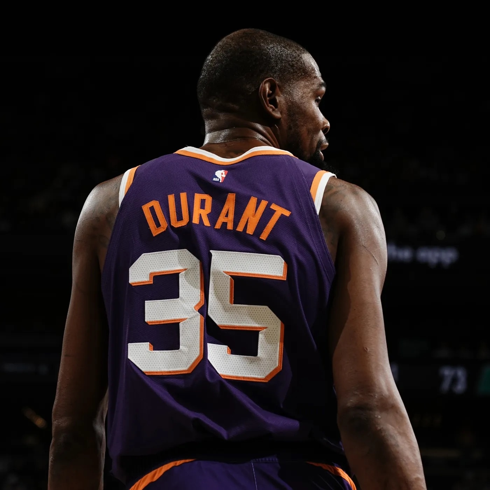

La revanche des deuxièmes
« I've been second my whole life. » En 2013, Kevin Durant résumait toute sa carrière en une phrase amère. Dix ans plus tard, elle dit quelque chose de bien plus large que le basket : ce que la deuxième place fait aux gens, et pourquoi ce sont parfois eux qui vont le plus loin.

Une carrière passée à un cran du sommet
En avril 2013, Kevin Durant fait la couverture de Sports Illustrated avec une phrase qui va lui coller à la peau pendant des années. Il dit avoir été deuxième toute sa vie : deuxième meilleur joueur au lycée, deuxième choix de la draft, deuxième au vote MVP à plusieurs reprises, deuxième en finale. Et il ajoute qu'il en a assez. Venant d'un des meilleurs joueurs de la planète, l'aveu a quelque chose de brutal. On imagine toujours le premier torturé par la pression, écrasé par les attentes. On pense beaucoup plus rarement au deuxième, qui regarde la première marche depuis la deuxième, assez proche pour la voir, jamais assez pour la toucher.
Les faits lui donnent raison. En 2007, Durant est sélectionné en deuxième position de la draft, juste derrière Greg Oden — un joueur dont la carrière sera ensuite ravagée par les blessures, ce qui rend l'ironie encore plus cruelle avec le recul. Les années suivantes, il finit régulièrement deuxième au vote MVP, battu par LeBron James. En 2012, son équipe atteint la finale et s'incline face au Heat du même LeBron. Partout où il arrive, quelqu'un est déjà là, un cran devant lui. Le plus dur n'est pas de perdre. C'est de perdre de peu, encore et encore, contre le même adversaire, tout en étant assez bon pour qu'on vous rappelle sans cesse à quel point vous auriez pu gagner.
Ce qu'on fait d'une frustration
Ce qui rend cette histoire intéressante, ce n'est pas la plainte. C'est ce que Durant en fait. Beaucoup, à sa place, auraient intériorisé le rôle une bonne fois pour toutes : le bon second, fiable, respecté, oublié. Lui en fait un moteur. La phrase de 2013 n'est pas un constat résigné, c'est une déclaration d'intention. Un an plus tard, il remporte son premier titre de MVP, mettant fin au règne de LeBron James. Et le soir où il reçoit ce trophée, il ne parle presque pas de lui. Dans un discours de plus de vingt minutes, au bord des larmes, il remercie un à un ses coéquipiers, le staff, puis sa famille, avant de se tourner vers sa mère, Wanda Pratt, et de lui dire qu'elle est la vraie MVP. L'homme qui voulait tant être premier passe son plus grand moment à rendre la place à quelqu'un d'autre.
Dans la création, c'est pareil
On retrouve exactement la même mécanique dans la musique et la mode. Les artistes les plus affamés ne sont presque jamais ceux qui sont arrivés en haut tout de suite. Ce sont ceux qui ont passé des années dans l'ombre d'un autre, à encaisser les comparaisons, à entendre qu'ils étaient « la version de » quelqu'un, avant d'imposer enfin leur propre nom. Le producteur longtemps crédité en petit sous le nom d'un rappeur plus connu. Le label indépendant cité juste après le gros du secteur. La marque qu'on prenait d'abord pour une copie et qui a fini par donner le ton à tout le monde. Le point commun, ce n'est pas le talent — il y en a partout. C'est la faim. Celui qu'on a mis deuxième a une dette à régler avec lui-même, et cette dette-là travaille même quand il dort.
La première place n'est pas une fin
La leçon de Durant n'est pas « soyez premier à tout prix ». C'est plus subtil que ça, et plus utile. La deuxième place n'est pas une sentence : c'est un point de départ, souvent plus fécond que le confort d'être devant. Elle oblige à se dépasser, elle garde affûté, elle rappelle en permanence d'où l'on vient. Beaucoup de premiers n'ont jamais eu ce moteur-là, parce qu'ils n'en ont jamais eu besoin, et ça finit toujours par se voir. Alors si vous vous sentez un cran derrière en ce moment — dans vos études, votre travail, votre art — ce n'est peut-être pas la mauvaise nouvelle que vous croyez. C'est souvent de cette place-là que partent ceux qui finissent devant.
La deuxième place humilie juste assez pour réveiller, sans jamais détruire. C'est souvent de là que partent ceux qui finissent devant.